Selectores CSS
Los selectores Son una parte primordial de la estructura de los estilos CSS, en si son el secmento de codigo dedicado a indicar a que alemento o elementos HTML se aplicaran los estilos, existen diversos tipos de selectores cada uno con sus propias caracteriticas.
Tipos de Selectores
Selector Universal
-
Este selector indica que las propiedades pertenecientes a este se aplicaran a todos los elementos del documento, es decir es un Selector de uso global, se define con el uso del "asterisco (*)", de la siguuiete forma:

Selector por Tipo de Elemento
-
En este caso en el selector se ingresa directamente el tipo de elemento HTML procediendo así a aplicarse los estilos CSS en cuestión a todos los elemetos de este mismo tipo que se encuentren en el docuemnto HTML.
De esta Forma:
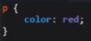
Clases
-
Las clases cuentan con la ventaja de poder elejir a cual elemento se le aplicaran los estilos, sin importar de que tipo se trate, siempre y cuando esta se vincule correctamente a este, por lo tanto al utilizar un selector de tipo clase los estilos unicamente se aplicaran a los eslemtos que realisen el llamdo a la clase con el uso del atributo "class" con nombre de dicha clase por valor, sin importar cual sea el tipo de estos elemetos ni el numero de veces que la clase sea llamada.
De esta forma:

Por otro lado desde el documento de estilos CSS la clase se define utilizando un "punto" (.) seguido del nombre de esta, de la siguiente forma:
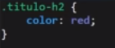
Id
-
Recordemos que los "id" son identificadores unicos de cada elemento, por lo tanto al utilizarlos como selector estamos indicando que los estilos se aplique espesificamente al elemento que posea dicho id, por lo tanto es necesario que el elemento HTML posea declarado un id en el atributo "id" de la siguiete forma:
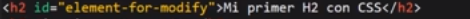
Por el lado del documento de estilos CSS los id se declaran con un "hashtag (#)" seguido del id correspondiente:
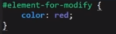
Atributo
-
En CSS tambien se pueden utilizar los atributos de un elemento HTML como selectores, para hacerlo indicarlo es necesario incluir tanto el atributo en cuestion como su valor dentro de "corchetes ([])", incluyendo los simbolos (=) y las comillas ("" o '') de la siguete forma:
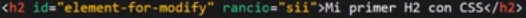
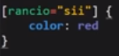
Nota: Realmente esta tecnica no solo se puede utilizar con los atributos si no que realmente se puede aplicar con cualquier texto que se encuentre en el interior de la biñeta de apertura de un elemento sin importar si cimple con el formato de un atributo o si es algo de propia autoria.
Desendientes
-
Este tipo de selector tiene una particularidad, se trata de aplicar un condicional a los elementos seleccionados, por lo tanto los estilos se aplicaran a los elementos que cumplan estas condiciones, las cuales consisten en los elementos padres de los alementos en cuestión, es decir estos estilos se aplicaran a aquellos elementos de un tipo en particular que se encuentre dentro de otro elemento preestablecido, de la siguienteforma:
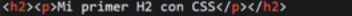
Como se puede ver en la imagen este ejemplo se basa en un parrafo que se enceuntra dentro de un h2, en este tipo de casos es cuandose aplican los selectores decendientes, ya que se tiene en cuenta tanto al contenedor como al elemtos hijo de la siguiente forma:
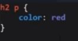
Como se puede observar en el ejemplo primero se coloca el elemento padre seguido del alemento hijo, de esta forma a los elemtos que cumplan con el condicional "parrafos dentro de un h2" se les aplicaran los estilos en cuestión.
-
Otro caso de los Selectores Desendientes
Otra alternativa es aplicar una variante de la condicional, en vez de definir el tipo del elemento padre tambien se puede defir una caracteritica de este, en este caso una clase que este posea como en el siguite ejemplo:
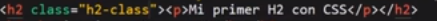
Como se puede ver en este ejemplo el elemento h2 en el que se encuentra el parrafo posee la clase "h2-class", por lo tanto cumpliria con la condicional definida a continuación:
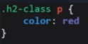
En este ultima imagen se definiria: en aquellos parrafos que se encuentren dentro de elementos que posean la clase "h2-class" se aplicaran los estilos en cuestión.
Nota: esto no se detiene allí, se puede aplicar más nives, por ejemplo en el caso de que dentro del parrafo se encontrara un alemento "span" este se podria definir perfectamente ubicando a la izquierda de "p" en la estructura del codigo CSS resultando en un condicona semaejante a: aplica estos estilos entodos aquellos "span" que se encuentren dentro de un parrafo dentro de un h2 o dentro de un elemento con la clase "h2-class"
:first-child
-
Se utiliza en los casos en que una clase se utiliza en repertidos elementos del mismo tipo de un mismo contenedor, su función se trata de una forma de aplicar un estilo unicamete al primer elemento, es decir, por ejemplo si se diese el caso de un formulario con multiples input el selector first-child permite selecionar unicamte al primer elemento de todos para aplicarle un estilo indibidual.
La estructura de este selector consiste en el selector del contenedor en cuestion (puede ser el id, la clase, o el tipo de elemento), seguido de dos puntos (:) y el valor first-child de la siguente forma:
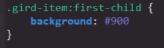
:nth-child()
-
Este tipo de selector es complementario a first-child, simplemete con la diferencia de que permite seleccionar cualquiera de los elementos repetidos para aplicarle los estilos particulares, la estructura de esta propiedad es similar a la de first-child,primero se ingresa el selector del contnedor en cuanestion, (puede ser el id, la clase, o el tipo de elemento), seguido de dos puntos (:) y el valor nth-child, seguido inmediantamete por el numero entre paretensis del elemento que se desea seleccionar, como se puede apreciar en el siguiente ejemplo:
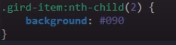
Nota: La numeración de los elementos es definida por el orden de estos en el codigo HTML.
:last-child
-
Este selector es el opuesto de first-child, ya que en vez de seleccionar al primer elemento este selecciona el ultimo, fuera de eso no existe una verdadera diferencia en el efecto o en la sintaxis de esta porpiedad con first-child.
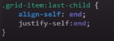
- :valid
-
Este tipo de selector selecciona los elementos input que posean un valor valido.
Un ejmplo de uso de este selector es aplicar un estilo en espesifico cuando el usuario ingrese un valor valido en un input de un formulario.
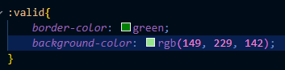
Existen más alternativas de selectores, sin embargo estas son las basicas y más utilizadas, aún así es necesario esta es una lista completa de selectores
Pseudo-Clases y pseudo elementos
Existen otros tipos de selectores con funciones paeticulares, no obstante son recursos CSS lo bastante extensos y importantes como para merecer su propio apartado, razon por lo cual se desengolsan en los apartados de Pseudo-Elementos y Pseudo-Clases respectibamente.